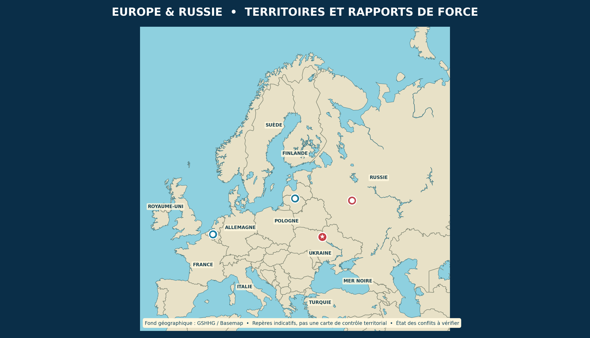

Europe et Russie
Une carte pour se repérer. Une histoire pour comprendre. Des acteurs aux intérêts parfois opposés — et parfois liés.

🔴 Moscou : centre politique russe🔵 Bruxelles : institutions européennes et siège de l'OTAN⭐ Kyiv : capitale ukrainienne🔵 Région baltique : sécurité régionale
La carte montre les frontières générales et des repères, pas les lignes de front. Les frontières contestées et la situation militaire évoluent : utiliser des sources datées pour les étudier. La couleur des marqueurs ne signifie pas que tous les États d'une région appartiennent aux mêmes organisations.